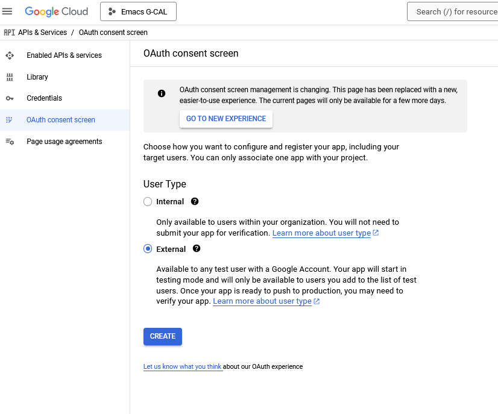
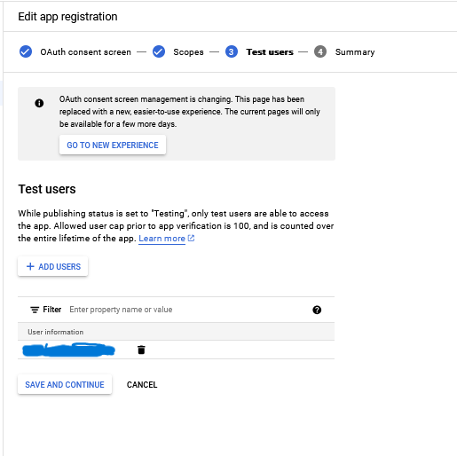
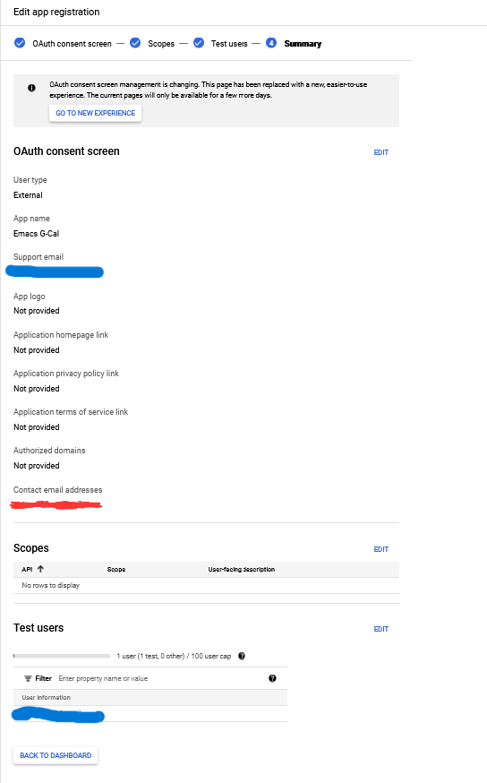
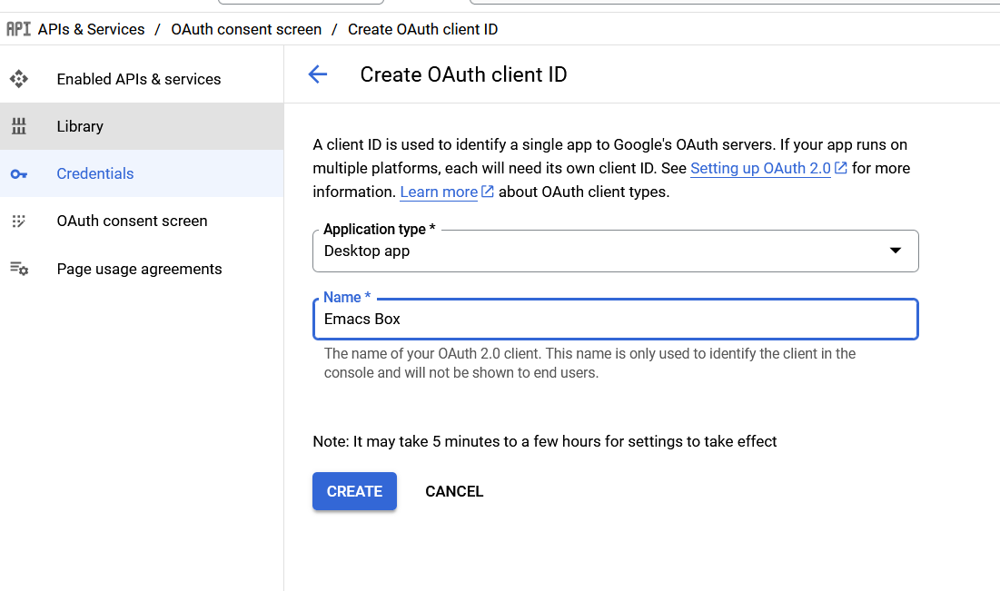

Emacs With Directional Google Calendar Sync
Calendar Sync
- Create a new app on the Google Developer Console
- Install org-gcal
- Add your API keys
- Sync Calendar
The guide on the Kidd's README is incredibly detailed. I'll be copying most of it and including the solutions that left me with a working system.
Setup Calendar API
Creating the Google App
- Navigate to: https://console.cloud.google.com/cloud-resource-manager
- Create a new project named "Emacs G-CAL"
- Click on the top left hamburger menu
- Select "API & Services>OAuth Consent Screen"
Create an external app

Assign app name
Give it a name such as "Emacs G-CAL". The rest of the settings can be left as default. Add your email address as a test user before completing the setup.
Leave scopes default
Leave this page unchanged

Create test users
Add yourself as a test user


Create the API Credential
- Click on Credentials>Create Credentials>Create OAuth Client ID
Application type is desktop. Copy your client ID and client secret to a text file after completing this step.

Enable the API
The last step is to enable the Google Calendar API for the project
- Click on Enabled API and Services
- Click on Enable API
- Scroll down to "Google Calendar" and enable it
Locating the Calendar ID
Your Google calendar ID will be a set in a variable when installing org-gcal in Emacs. This is how to find it and please write it down.
Navigate to your google calendar settings and scroll down to the integration/sharing settings. There will be links to the ISC calendars for sharing, as well as a section that says Calendar ID
For Gmail Personal accounts at least, the Calendar ID will be your email address address. Write down your Calendar ID
Adding ORG-GCAL to Emacs
Manually adding the package
Clone the org-gcal repository into your emacs load path. I have the following code in my init.el. It allows my org-gcal/ repository to be stored and read from the distribution folder.
(let ((default-directory "~/.emacs.d/distribution/"))
(normal-top-level-add-subdirs-to-load-path))This is the official way of installing org-gcal. For the rest of this guide, I'll be using a slightly modified version that provides basic security for storing the API Keys. Please acknowledge this code block, but don't use it if you're following along.
# THIS IS ONLY A WORKING EXAMPLE. KEEP READING PAGE
(use-package org-gcal
:ensure t
:config
(require 'org-gcal)
(require 'plstore)
(setq plstore-cache-passphrase-for-symmetric-encryption t)
(setq org-gcal-client-id "YOUR_CLIENT_ID"
org-gcal-client-secret "YOUR_CLIENT_SECRET"
org-gcal-fetch-file-alist '(("YOUR_CALENDAR_ID" . "~/.emacs.d/calendar.org")))
(org-gcal-reload-client-id-secret)
)GPG Keys and about PLStore
Org-gcal relies on using plstore which stores key value pairs in an encrypted
file using GPG. The purpose of the plstore is to read the org-gcal-client-id and
org-gcal-client-secret, and then use an oauth2.0 library to request the xoauth2.0
token. The token is then encrypted in a file located in
$HOME/.emacs.d/oauth2-auto.plist. Anytime you sync your calendar, that file will
be decrypted and used for authentication.
I'll start with creating a passwordless GPG keypair. This is required by my
email client. You don't strictly need a passwordless key pair. Pass is used to
store the client ID and secret keys in encrypted files. In my init.el, I'll tell
emacs to decrypt the files for the variables. Additionally, I'll tell plstore to
encrypt using my key-pair instead of using symmetric encryption. This avoids
hard coded API keys and password prompts when syncing.
Start with creating the GPG key pair and then encrypting your Client ID and
Client Secret ID. These encrypted files will automatically be stored in
$HOME/.password-store/g-cal/
apt install pass
gpg --batch --passphrase '' --quick-gen-key proton@proton.local default default
pass init proton@proton.local
pass insert g-cal/clientid
<PASTE Client ID Here>
pass insert g-cal/clientsecret
<PASTE Client Secret ID Here>Adding to init.el
Now use this code snippet to install GCal.:
(install-package 'org-gcal)
(require 'org-gcal)
(require 'plstore)
(setq org-gcal-client-id (string-trim (shell-command-to-string "pass g-cal/clientid")))
(setq org-gcal-client-secret (string-trim (shell-command-to-string "pass g-cal/clientsecret")))
(setq plstore-cache-passphrase-for-symmetric-encryption t)
(setq org-gcal-recurring-events-mode 'nested) ; Nested org headers for re-occuring events
(setq org-gcal-fetch-file-alist `(("first@gmail.com" . ,(expand-file-name "calendar.org" org-directory))))
(setq plstore-encrypt-to "proton@proton.local")
(let* ((emacs-dir user-emacs-directory) ; Ensure oauth2-auto.plist file exists
(oauth2-file (expand-file-name "oauth2-auto.plist" emacs-dir)))
(unless (file-exists-p oauth2-file)
(with-temp-buffer
(write-file oauth2-file))))
(defun my-org-gcal-sync-clear-token ()
"Sync calendar, clearing tokens first, without producing output."
(interactive)
(require 'org-gcal)
(when org-gcal--sync-lock
;; Avoids displaying the org-sync-lock error
(org-gcal--sync-unlock))
(org-gcal-sync-tokens-clear)
(let ((inhibit-message t)
(message-log-max nil))
(org-gcal-reload-client-id-secret)
(org-gcal-sync)))Syncing Your Calendar
Setup & Manual Sync
This part can be tedious. I'll include steps for troubleshooting.
Firstly, ensure your org agenda files are set.
(setq org-agenda-files '("~/.emacs.d/calendar.org"))
(setq org-default-agenda-file "~/.emacs.d/calendar.org")
Now create the $HOME/.emacs.d/oauth2-auto.plist file. For an unknown reason,
the plstore module will fail to create the encrypted oauth2-auto.plist file
unless it already exists. Create this file manually before attempting the g-cal
sync/google sign in window:
touch $HOME/.emacs.d/oauth2-auto.plistOpen Emacs and run the following command
# If the sync ever fails, run this before attempting to resync
M-x org-gcal--sync-unlock
M-x org-gcal-syncThis will attempt to open your default web browser. Complete the "sign in with google" consent screen and close the window. Emacs will retrieve the xoauth2.0 token after closing the window, then encrypt it into that file.
If you have a prompt requesting to kill the xoauth2.0 buffer, click "Save and kill buffer".
Run the sync again. This time it should should download your email events into your agenda/calendar file.
M-x org-gcal-syncYour calendar should be synced at this point!
Automatically Sync Calendar
Filling this out when I have a clean answer. The minibuffer output is too verbose and distracting. The decryption causes emacs to hang until the plstore file is read.
Org Capture Template
Per the README, this is the official way to use org capture. I learned its easiest to write dates in the format "Jan 1 23:00" when scheduling items. Read the documentation for any information on how the application works.
(setq org-capture-templates
`(("a" "Appointment" entry (file ,(concat user-emacs-directory "/calendar.org"))
"* %?\n:PROPERTIES:\n:calendar-id:\tfirst@gmail.com\n:END:\n:org-gcal:\n%^T--%^T\n:END:\n\n" :jump-to-captured t)
("j" "Journal" entry (file org-default-journal-file)
"** %? %U\n\n"
:empty-lines 1)
))Troubleshooting
Scenario: The sync is completing without error though no calendar events are populating.
Solution: Create a new calendar event item first and see if that syncs. My calendar took a while to retrieve future and past events. I was under the impression that only new calendar event items would appear. All of your events will appear, though sometimes it can take a moment.
If the sync fails, run these commands and try again. This is also applicable to if you receive an oauth provider error. Running the reload command will fix that as well:
M-x (org-gcal-reload-client-id-secret)
M-x (org-gcal--sync-unlock)
M-x (org-gcal-sync)Scenario: Sync failing in general
Solution: It could be that your API credentials are incorrect Try steps above after confirming the credentials are correct. Double check that your oauth2-auto.plist file in the emacs-user-directory contains data. This should contain encrypted PGP data. If it doesn't, read your emacs error logs and enable org-gcal-toggle-debugging. This will indicate whether its an issue creating the file or with the API server.
I have tried clicking on "yes", "no", and "save then kill" when first running
org-gcal-sync and receiving the oauth2-auto.plist buffer message. I believe if
you click "save then kill", it will properly save the PGP encrypted file that
emacs creates.
If the file contains valid PGP data and the message buffer says its getting decrypted, its another problem with either the API or the sync being delayed. Please try creating new calendar event items specifically when troubleshooting.
The steps above should "just work". Additional issues would need individual troubleshooting.